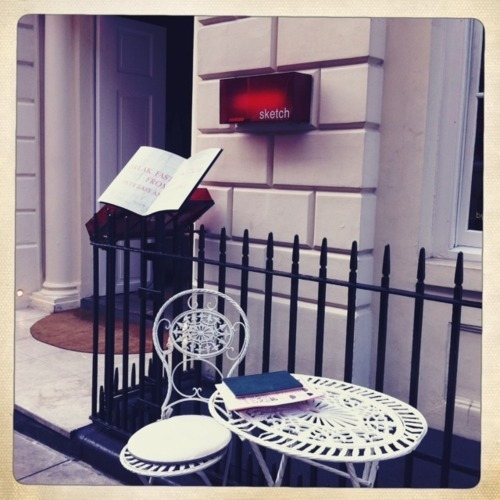

Thu, 13 Oct 2011 14:22:58 · London · thankyou · sketch · karma · goodkarma · leica
lost my leica at sketch london abandoned all hope

Lost my Leica at Sketch London, abandoned all hope to get it back but miracle does happen. They found it and even kind enough to arrange for the return shipping. Thank you!